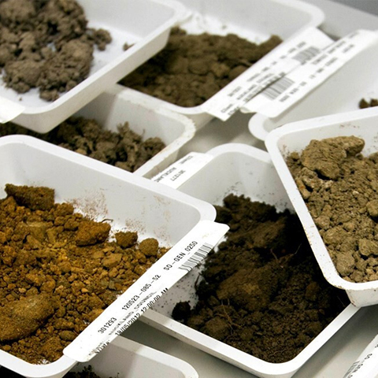
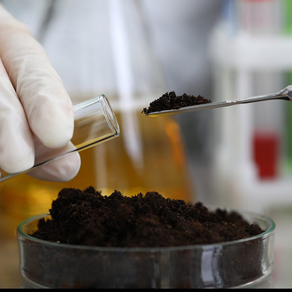
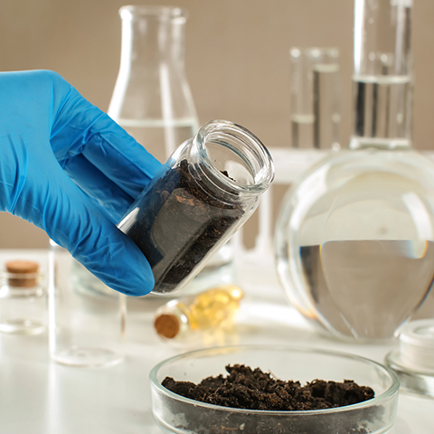
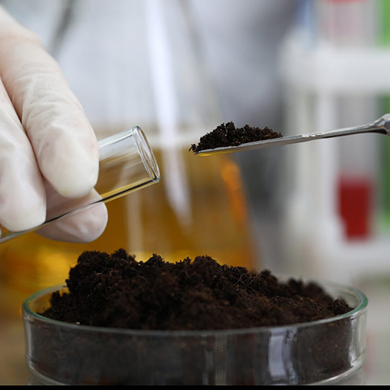
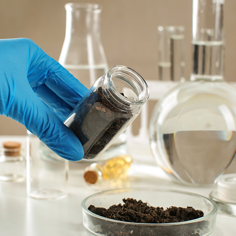
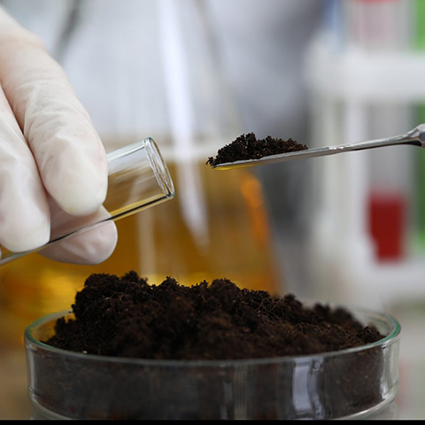
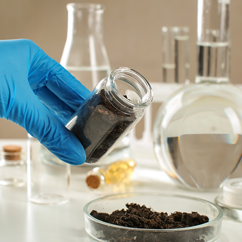

АНАЛИTИЧECKAЯ
ЛAБOPATOPИЯ
MACCOBЫX
AHAЛИ3OB
Комплексная организация проведения лабораторных исследований
объектов окружающей среды для сопровождения
инженерно-экологических
изысканий и других целей
Цените свою деятельность и свое время?
Хотите удобства в работе?
Ищете комплексные услуги?
Тогда предлагаем обратится к нам!
ООО «АЛМА» станет вашим надежным партнером и помощником!
Сотрудничая с нами, вы получаете результаты только от аккредитованных в ФСА лабораторий.
Хотите удобства в работе?
Ищете комплексные услуги?
Тогда предлагаем обратится к нам!
ООО «АЛМА» станет вашим надежным партнером и помощником!
Сотрудничая с нами, вы получаете результаты только от аккредитованных в ФСА лабораторий.

 





Чаще всего к нам обращаются, когда нужны:
- Бактериологическое и гельминтологическое исследование грунта
-
Биотестирование грунтов
(токсикологический анализ на 2-х тест-объектах) -
Исследование грунта на загрязнения
(медь, цинк, свинец, никель, кадмий, мышьяк, ртуть, бенз(а)пирен, нефтепродукты, pН) -
Исследование удельной активности радионуклидов грунта
(Ra-226, Th-232, K-40, Cs-137, Аэфф) -
Дневные и ночные замеры физических (шум, ЭМИ)
и радиометрических (ЭРОА, МЭДГИ, ППР) показателей - Исследование воды подземной (грунтовой) и поверхностной (природной)
Списки определяемых показателей
Почвы и другие субстраты
- Азот общий
- Массовая доля влаги
- Массовая доля золы
- Массовая доля органического вещества
- Водородный показатель (pH)
- pH солевой вытяжки
- Активная кислотность
- Обменная кислотность
- Емкость катионного обмена (ЕКО)
- Гидролитическая кислотность
- Влажность
- Гигроскопическая влажность
- Плотность
- Гранулометрический (зерновой) состав
- Максимальная гигроскопическая влажность
- Массовая доля фосфатов (P₂O₅)
- Массовая доля подвижных соединений фосфора (P₂O₅)
- Массовая доля подвижных соединений калия (К₂O)
- Массовая доля подвижных соединений марганца
- Массовая доля подвижных соединений меди
- Массовая доля подвижных соединений кобальта
- Массовая доля подвижных соединений цинка
- Массовая доля подвижных форм железа
- Массовая доля кислоторастворимых форм железа
- Массовая доля (валовое содержание) железа
- Массовая доля подвижных форм кадмия
- Массовая доля кислоторастворимых форм кадмия
- Массовая доля (валовое содержание) кадмия
- Массовая доля подвижных форм калия
- Массовая доля кислоторастворимых форм калия
- Массовая доля (валовое содержание) калия
- Массовая доля подвижных форм кальция
- Массовая доля кислоторастворимых форм кальция
- Массовая доля (валовое содержание) кальция
- Массовая доля подвижных форм кобальта
- Массовая доля кислоторастворимых форм кобальта
- Массовая доля (валовое содержание) кобальта
- Массовая доля подвижных форм магния
- Массовая доля кислоторастворимых форм магния
- Массовая доля (валовое содержание) магния
- Массовая доля подвижных форм марганца
- Массовая доля кислоторастворимых форм марганца
- Массовая доля (валовое содержание) марганца
- Массовая доля подвижных форм меди
- Массовая доля кислоторастворимых форм меди
- Массовая доля (валовое содержание) меди
- Массовая доля подвижных форм молибдена
- Массовая доля кислоторастворимых форм молибдена
- Массовая доля (валовое содержание) молибдена
- Массовая доля подвижных форм мышьяка
- Массовая доля кислоторастворимых форм мышьяка
- Массовая доля (валовое содержание) мышьяка
- Массовая доля подвижных форм натрия
- Массовая доля кислоторастворимых форм натрия
- Массовая доля (валовое содержание) натрия
- Массовая доля подвижных форм никеля
- Массовая доля кислоторастворимых форм никеля
- Массовая доля (валовое содержание) никеля
- Массовая доля подвижных форм свинца
- Массовая доля кислоторастворимых форм свинца
- Массовая доля (валовое содержание) свинца
- Массовая доля подвижных форм стронция
- Массовая доля кислоторастворимых форм стронция
- Массовая доля (валовое содержание) стронция
- Массовая доля подвижных форм хрома
- Массовая доля кислоторастворимых форм хрома
- Массовая доля (валовое содержание) хрома
- Массовая доля подвижных форм цинка
- Массовая доля кислоторастворимых форм цинка
- Массовая доля (валовое содержание) цинка
- Массовая доля подвижных форм ртути
- Массовая доля кислоторастворимых форм ртути
- Массовая доля (валовое содержание) ртути
- Массовая доля обменного калия (K₂O)
- Массовая доля плотного остатка водной вытяжки
- Удельная электрическая проводимость (удельная электропроводность)
- Массовая доля бикарбонат-иона
- Массовая доля карбонат-иона
- Массовая доля иона хлорида
- Массовая доля иона сульфата
- Массовая доля калия (K)
- Массовая доля натрия (Na)
- Массовая доля кальция (Ca)
- Массовая доля магния (Mg)
- Обменный (подвижный) алюминий
- Обменный натрий
- Обменный магний
- Обменный кальций
- Обменный марганец
- Массовая доля азота аммония
- Массовая доля азота нитратов
- Массовая доля подвижной серы
- Сумма поглощенных оснований
- Массовая доля нефтепродуктов
- Бенз(а)пирен
- Сумма токсичных солей
- Массовая доля общего содержания карбонатов (по Козловскому)
- Массовая доля содержания гипса (по Хитрову)
Водные исследования
- Водородный показатель (pH)
- Массовая концентрация хлоридов
- Массовая концентрация нефтепродуктов
- Массовая концентрация бенз(а)пирена
- Массовая концентрация железа (Fe)
- Массовая концентрация кадмия (Cd)
- Массовая концентрация кобальта (Co)
- Массовая концентрация марганца (Mn)
- Массовая концентрация меди (Cu)
- Массовая концентрация никеля (Ni)
- Массовая концентрация свинца (Pb)
- Массовая концентрация хрома (Cr)
- Массовая концентрация цинка (Zn)
- Массовая концентрация кальция (Ca)
- Массовая концентрация магния (Mg)
- Массовая концентрация калия (K)
- Массовая концентрация натрия (Na)
- Массовая концентрация стронция (Sr)
- Массовая концентрация ртути (Hg)
- Массовая концентрация мышьяка (As)
- Массовая концентрация нитрат-ионов
- Массовая концентрация нитрит-ионов
- Массовая концентрация сульфат-ионов
- Массовая концентрация фосфат-ионов
- Массовая концентрация фторид-ионов
- Массовая концентрация хлорид-ионов
- Массовая концентрация анионных поверхностно-активных веществ (АПАВ)
Радиометрические исследования
- Удельная активность калия-40
- Удельная активность радия-226
- Удельная активность тория-232
- Удельная активность цезия Cs-137
- Мощность эквивалентной дозы гамма-излучения (МЭДГИ)
- Плотность потока радона (ППР)
- Эквивалентная равновесная объёмная активность (ЭРОА) радона в воздухе
- Объёмная активность (ОА) радона в воде
Физические исследования
- Скорость движения воздуха
- Температура воздуха
- Относительная влажность воздуха
- ТНС-индекс
- Интенсивность теплового облучения (излучения)
- Эквивалентный уровень звукового давления в октавных полосах со среднегеометрическими частотами 2,4,6,8 Гц
- Эквивалентный уровень звукового давления в третьоктавных полосах со среднегеометрическими частотами (12,0-40) Гц
- Напряженность электростатического поля
- Напряженность электростатического поля промышленной частоты (50 Гц)
- Напряженность магнитного поля (магнитной индукции) промышленной частоты (50 Гц)
- Освещенность рабочей поверхности
- Яркость
- Коэффициент пульсации освещенности
- Уровень звука
- Эквивалентный уровень звука
- Максимальный уровень звука
- Уровень звукового давления
- Инфразвук уровни звукового давления в октавных полосах частот инфразвука
- Среднеквадратические корректированные уровни звукового давления с частотными характеристиками A, Z, G, F1 с временными характеристиками S, F, Leg
- Общая вибрация
- Уровень вибрации
- Эквивалентный корректированный уровень виброскорости
Свяжитесь с нами!
- Адрес: Москва, Пыжёвский пер., 7, стр. 1
- Часы работы: пн-пт 10:00 - 18:00
- Телефон: 8-800-511-52-83
- WhatsApp: 8-800-511-52-83
- E-mail: lab-alma@mail.ru